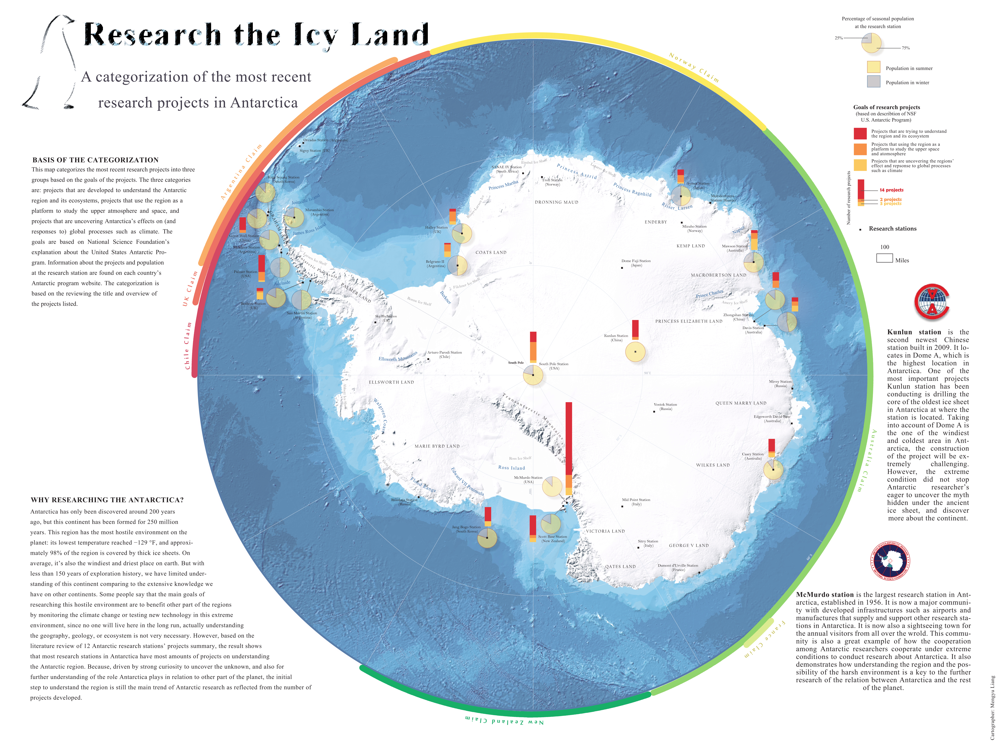

§ Research the Icy Land

This map project categorizes Antarctic research projects according to project outcome. The categorization is based on the goals of the projects, drawn from reviewing many Antarctica project descriptions listed on the NSF website as well as other national polar research institution websites, such as Antarctica New Zealand. The map conveys that the main trend of current Antarctic research is still to understand the Antarctic region and its ecosystem, based on the fact that large portions of research stations focus their projects on studying Antarctica's ecosystem, weather system, etc.
Another reason for making this map was my own curiosity about research opportunities in Antarctica. Through reviewing the project summaries, I gained information on the projects, the research stations, and the culture of different research stations. Making this map was a starting point for getting to know the region.